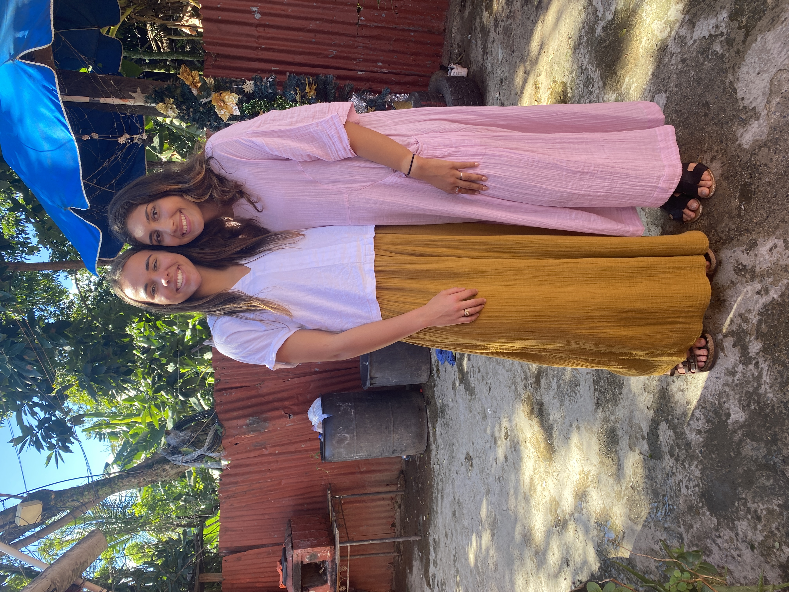
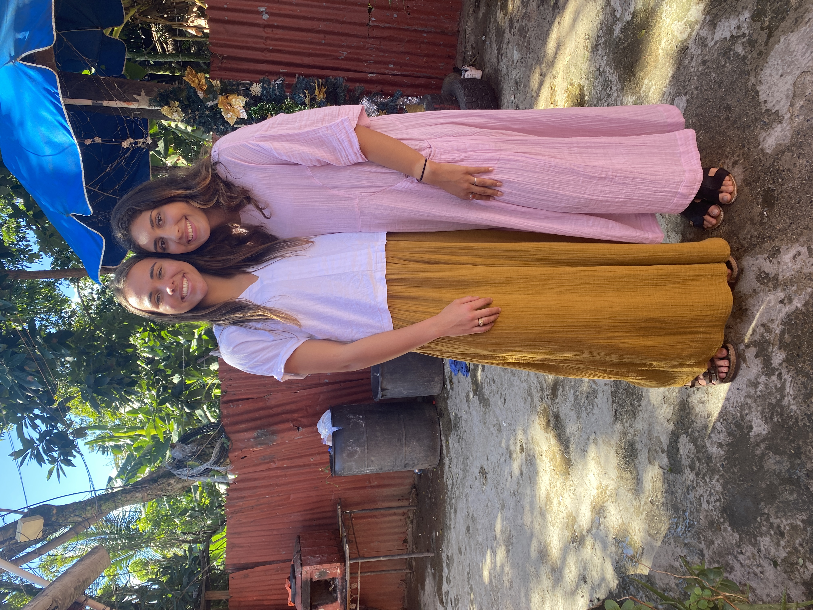
This past December I got an oppertunity to serve in the Dominican Republic with Mission of Hope. I went along with about 30 other student athletes to partner with a local church and share the gospel. Our team brought a variety of sports equipment from our teams and played sports with kids in the community. We also brought water filters that we installed in some of the homes in the community to give families easy access to clean water. It was a great oppertunity to work alongside my peers and make and impact on peole in need.
 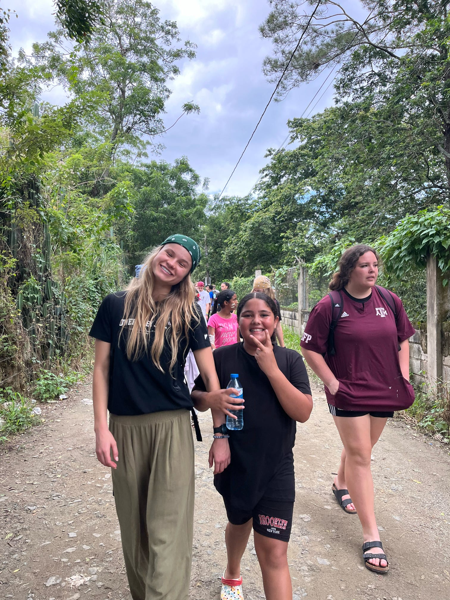
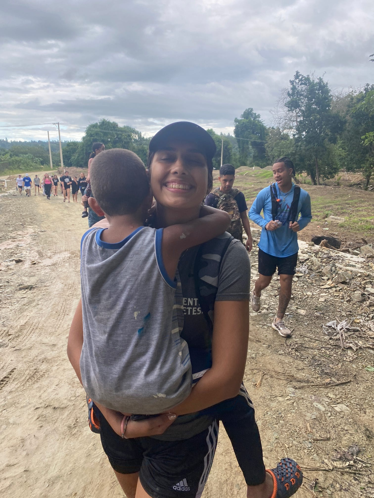
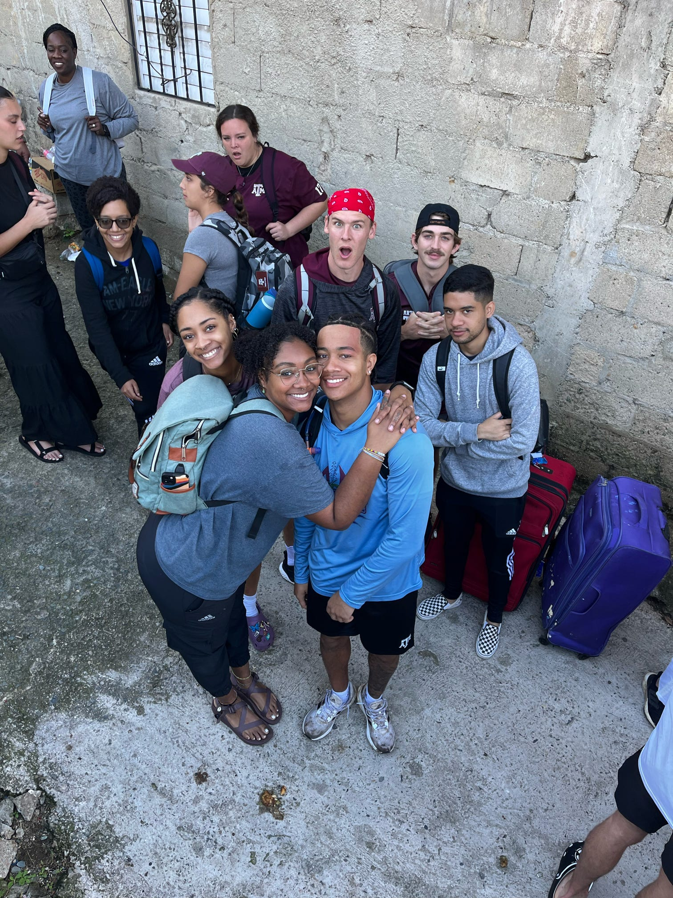
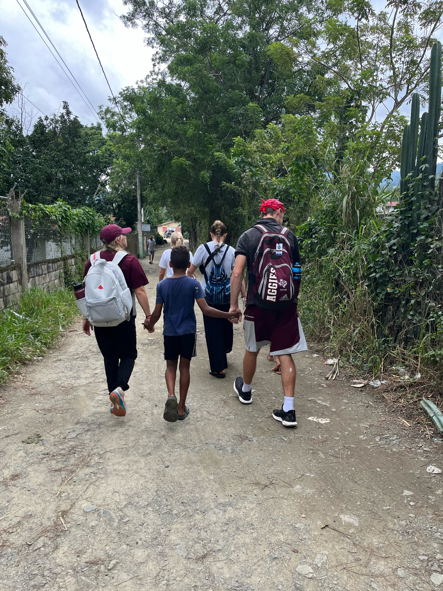
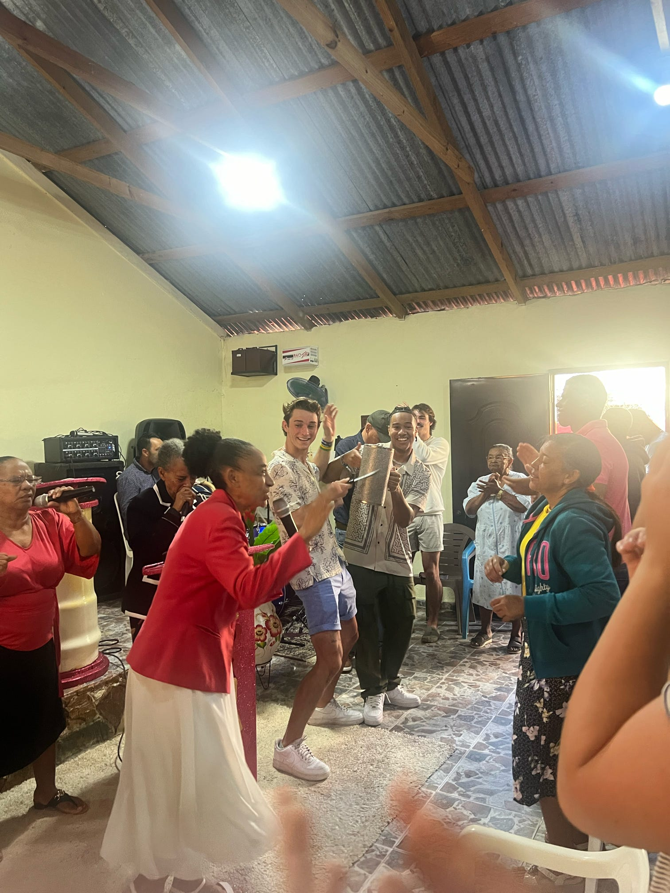
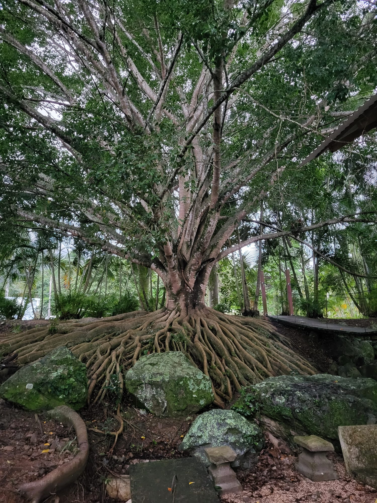
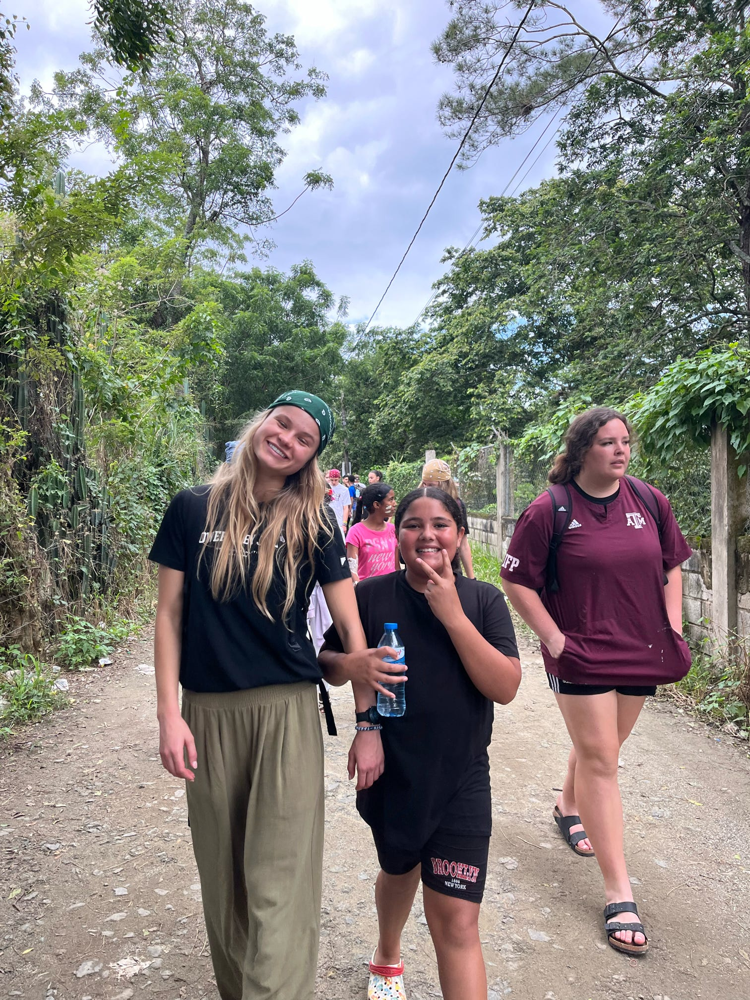
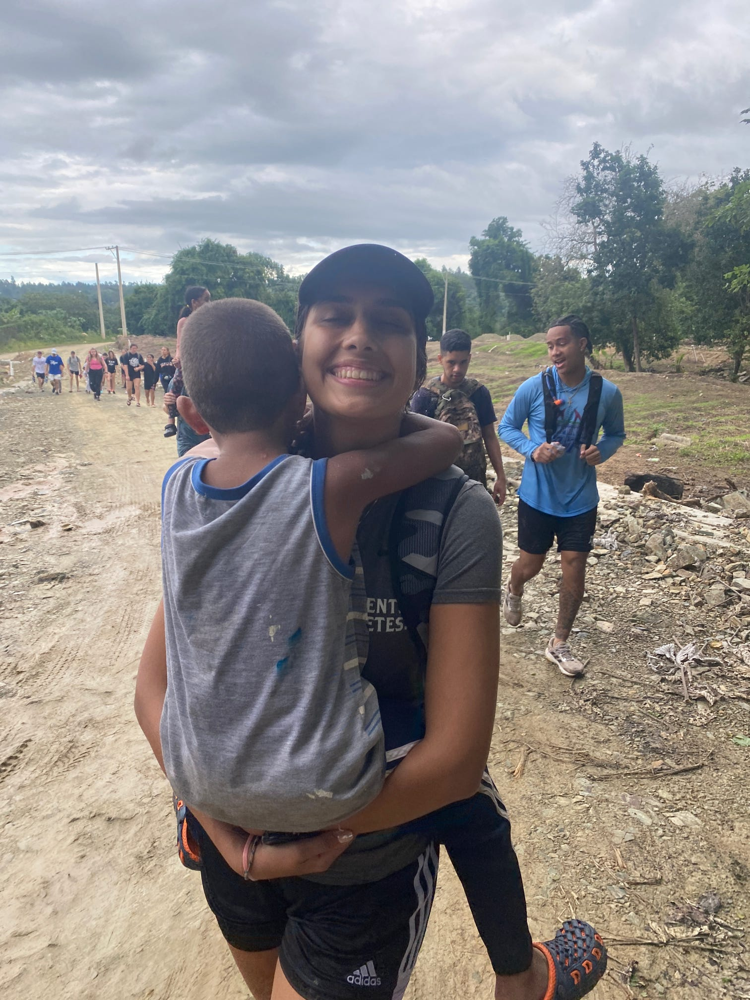
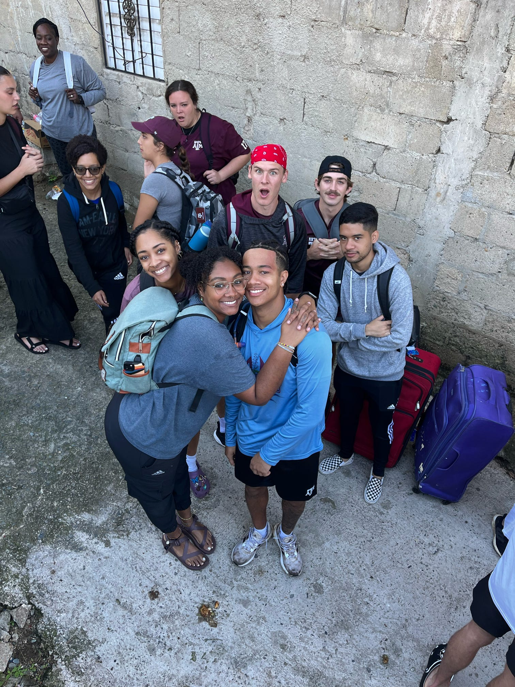
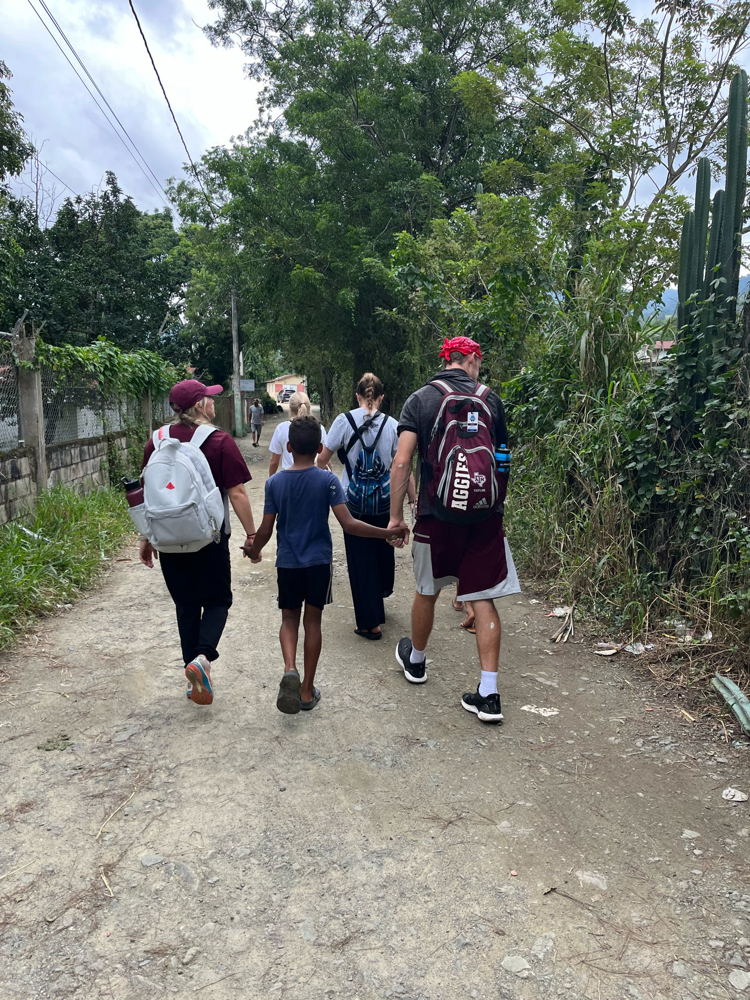
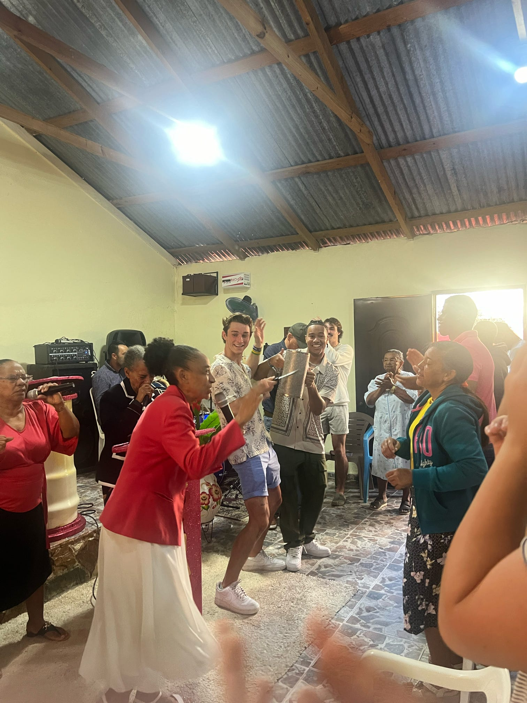
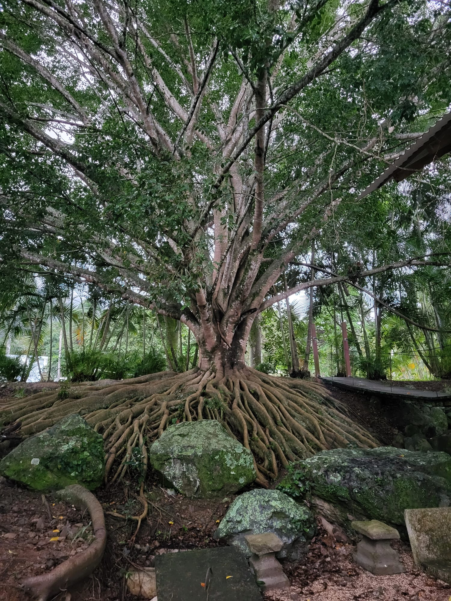

In December of 2022, I went with other athletes at A&M to Puerto Plata, Dominican Republic to share the gospel. This was my first mission trip and it was a great experience to be able to serve alongside my teammates. On the trip, we partnered with a local pastor to help serve his community and grow his church. The village that we were in for the week was comprised mostly of Haitians who had fled from their homes due to political turmoil- read more about the turmoil in Haiti here. It was a cool opportunity to meet the community where they were at, and the hope that the gospel provides. I learned so much on this trip and was very thankful for this opportunity. It made me not take anything for granted and reminded me of the importance of community./p>